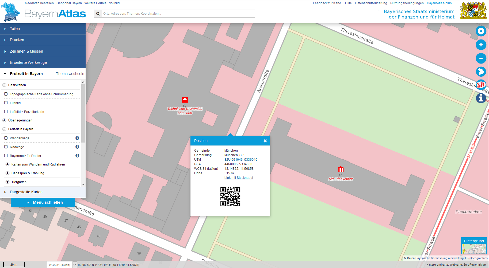
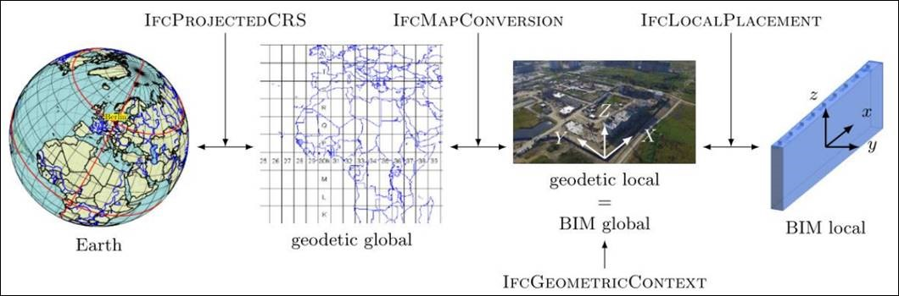

Annex E Examples - Georeferencing-1
Example overview
Intent
This scenario encapsulates the model set up with correct georeferencing.
It puts the project’s base point at the entrance to the Technical University of Munich, aligns the coordinate axes with East and North, and sets the units of the project to SI units.
Prerequisites
This scenario builds upon following other scenarios:
- ProjectSetup-1
- Tin-1
Content
This scenario covers the following concepts and/or IFC entities:
- georeferencing metadata
- representation of
IfcSolidStratum:
Supporting files
Following files correspond to this scenario:
| Filename | Description |
|---|---|
UT_GeoRef_1.ifc |
the exported content as IFC document |
UT_GeoRef_1_1.png |
screen shot of the entrance to TUM from BayernAtlas |
UT_GeoRef_1_2.jpg |
schematic representation of georeferencing entities |
Images
 Figure a91ed08a-ccca-4852-8794-de6583652bd1  Figure ce76cd8b-6092-485a-bdf4-111565fdda6e Figure ce7edaf6-11f9-4ecd-ae88-ca1392ae8668
{kind=link}
{kind=link}
{kind=link}
IFC-SPF source
ISO-10303-21;
/* ------- This file was produced manually for IFC Infra Extension Deployment project. --------- */
/* ------- The file should come with a README.md with supplementing info. ---------------------- */
/* ------- Stefan Jaud, stefan.jaud@tum.de, 2020.07.27. ---------------------------------------- */
HEADER;
FILE_DESCRIPTION (('ViewDefinition [Ifc4X3NotAssigned]'), '2;1');
FILE_NAME ('UT_GeoRef_1.ifc', '2020-07-27T12:00:00', ('Stefan Jaud'), ('bSI Infra Extension Deployment project'), 'manual text editing', 'SublimeText 3.0', 'GitHub pull request');
FILE_SCHEMA (('IFC4X3_RC2'));
ENDSEC;
DATA;
/* ------- UT ProjectSetup_1 ------------------------------------------------------------------- */
#1 = IFCDIMENSIONALEXPONENTS(0, 0, 0, 0, 0, 0, 0);
#2 = IFCDIRECTION((1., 0., 0.));
#3 = IFCDIRECTION((0., 1., 0.));
#4 = IFCDIRECTION((0., 0., 1.));
#5 = IFCCARTESIANPOINT((0., 0., 0.));
#16 = IFCPROJECT('2DAvEupIz0HQr73cMaawtY', $, 'GeoRef_1', 'The bare minimum of an IFC file exchange with only georeferencing meta data.', $, $, $, (#28), #17);
#17 = IFCUNITASSIGNMENT((#18, #19, #20, #24, #25, #26, #27));
#18 = IFCSIUNIT(*, .LENGTHUNIT., $, .METRE.);
#19 = IFCSIUNIT(*, .AREAUNIT., $, .SQUARE_METRE.);
#20 = IFCSIUNIT(*, .VOLUMEUNIT., $, .CUBIC_METRE.);
#22 = IFCSIUNIT(*, .PLANEANGLEUNIT., $, .RADIAN.);
#23 = IFCMEASUREWITHUNIT(IFCPLANEANGLEMEASURE(0.017453292519943295), #22);
#24 = IFCCONVERSIONBASEDUNIT(#1, .PLANEANGLEUNIT., 'degree', #23);
#25 = IFCSIUNIT(*, .MASSUNIT., .KILO., .GRAM.);
#26 = IFCSIUNIT(*, .TIMEUNIT., $, .SECOND.);
#27 = IFCMONETARYUNIT('EUR');
#28 = IFCGEOMETRICREPRESENTATIONCONTEXT($, 'Model', 3, 1.E-6, #29, #54);
#29 = IFCAXIS2PLACEMENT3D(#5, #4, #2);
/* ------- UT GeoRef_1 ------------------------------------------------------------------------- */
/* ------- ProjectedCRS provides information about the underlying geodetic --------------------- */
/* ------- coordinate reference system --------------------------------------------------------- */
#30 = IFCPROJECTEDCRS('EPSG:5834', 'DB_REF / 3-degree Gauss-Kruger zone 4 (E-N) + DHHN92 height', 'EPSG:5684', 'EPSG:5783', 'Gauss-Kruger', '4', #18);
/* ------- MapConversion provides information about the global-to-local transformation --------- */
#31 = IFCMAPCONVERSION(#28, #30, 4468005., 5334600., 515., 1., 0., 1.);
/* ------- UT Tin_1 ---------------------------------------------------------------------------- */
/* ------- IfcSite is the top most element in the spatial structure ---------------------------- */
#32 = IFCSITE('27H$neCQf1NwtmczxBInPR', $, $, $, $, #33, #40, $, .ELEMENT., $, $, $, $, $);
/* ------- The IfcSite's placement is the top-most placement and uses the same ----------------- */
/* ------- IfcAxis2Placement as IfcGeometricRepresentationContext does ------------------------- */
#33 = IFCLOCALPLACEMENT($, #29);
/* ------- Project/Spatial structure ----------------------------------------------------------- */
#35 = IFCRELAGGREGATES('3Hu7f6BmT14B_XS9yS78Jr', $, $, $, #16, (#32));
/* ------- Simple representation of the construction site: ------------------------------------- */
/* ------- Square with side=1km centred at (0,0,0) (local coordinates) ------------------------- */
/* ------- or centred at (4468005., 5334600., 515.) (global coordinates) ----------------------- */
#40= IFCPRODUCTDEFINITIONSHAPE($,$,(#41));
#41= IFCSHAPEREPRESENTATION(#28,'Surface','Tessellation',(#42));
#42= IFCTRIANGULATEDFACESET(#43,$,.F.,((1,2,3),(1,3,4)),$);
#43= IFCCARTESIANPOINTLIST3D(((-500.,-500.,0.),(500.,-500.,0.),(500.,500.,0.),(-500.,500.,0.)),$);
/* ------ IfcSolidStratum represents the top most layer of terrain ----------------------------- */
#50 = IFCSOLIDSTRATUM('28H$neCQf1NwtmczxBInPR', $, $, $, $, #53, #40, $);
/* ------ Spatial inclusion in the project ----------------------------------------------------- */
#51 = IFCRELCONTAINEDINSPATIALSTRUCTURE('3Hu7f6BmT14B_XS9yS78Jq', $, $, $, (#50), #32);
/* ------ Placement is relative to that of IfcSite according to the spatial structure ---------- */
/* ------ The way it is modelled, there is no offset and no rotation. -------------------------- */
#52 = IFCAXIS2PLACEMENT3D(#5, #4, #2);
#53 = IFCLOCALPLACEMENT(#33, #52);
/* ------ TrueNorth of the geometric context must be a 2D vector ------------------------------- */
#54 = IFCDIRECTION((0.,1.));
ENDSEC;
END-ISO-10303-21;